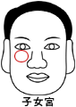

子女�m |
（�I堂及�P�Q部位，左子右女） |
一、若��肌肉乾枯低陷或��骨的人
１．子女不孝，易有���桃猓�父母�c子女�o��。
２．子女健康有���}。
３．�言幸咨����}，要多看�t生，防止不孕或流�a。
二、若�����y深痕的人
１．不易�言校�要�z查生殖是否有缺陷。
２．子女不孝，�c子女健康有���}。
３．易收�B螟蛉�x子。
三、若��有黑痣的人
１．防止患有先天性的疾病。
２．注意刑�w���}，左眼子女�m代表男，右眼子女�m代表女，痣在眼�^代表�L男�L女，痣在眼尾代表么男么女。
３．��心��孩子��操心操�冢�甚至�^份的���邸�
４．痣的大小或色�焊�象徵程度的�p重。
四、若肌肉�S�M或有�P�Q的人
１．子女必定成器有出息。
２．子女相��孝��。
３．子女健康良好。
五、若子女�m����的人
１．子女落落大方。
２．子女成群。
�湓]：
１．生男育女速�喾ǎ�
被相人：男女都可（孕�D本人或先生）
方 法： (１). 概看全����色。
(２). 快速逼近看�P�Q。
�C合�馍�左和平均��色不同－生男胎。
�C合�馍�右和平均��色不同－生女胎。
右�P�Q和平均��色不同，眼袋�^大－生女。
左�P�Q和平均��色不同，眼袋�^大－生男。
２．�R盆日期：
(１). 印堂�t主丙丁日火旺，必生男。
(２). 水星口角，主壬癸水旺，必生女。
(３). �p�E明主甲乙日本旺，必生男。
(４).
天�}下�欤�主庚辛日金旺，必女必�y�a，必男�o妨。